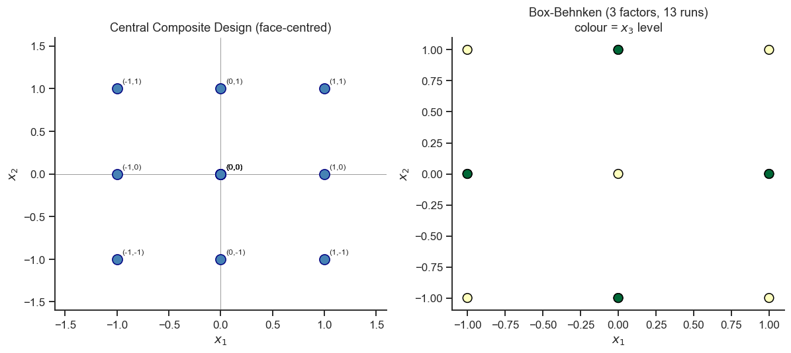
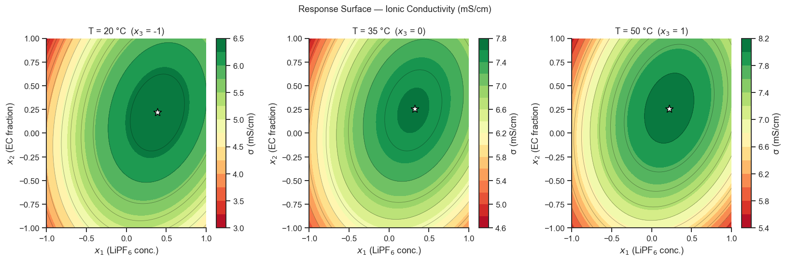

19. Response Surface Methodology (RSM)#
After screening identifies the important factors, RSM builds a quadratic model of the response surface to locate the optimum precisely.
The quadratic (second-order) model in two factors is:
Topics
Central Composite Design (CCD) and Box-Behnken Design
Generating designs with pyDOE3
Fitting the quadratic model
Surface and contour plots
Desirability functions
Case study: electrolyte composition optimisation
import numpy as np
import pandas as pd
import matplotlib.pyplot as plt
import seaborn as sns
import pyDOE3
import statsmodels.formula.api as smf
from scipy.optimize import minimize
sns.set_theme(style='ticks', palette='colorblind')
plt.rcParams.update({'figure.dpi': 110, 'font.size': 11})
rng = np.random.default_rng(13)
19.1 Central Composite Design (CCD)#
A straight-line (main-effects) model can only ever go up or down — it can never show a peak. To fit a curved (quadratic) surface and actually locate a maximum or minimum, the design needs experimental points that are not just at the corners of factor space, otherwise there is no information about how the response curves in between. A CCD adds those extra points to a familiar factorial “skeleton”:
\(2^k\) factorial corner points (± 1) — the familiar full factorial.
\(2k\) axial (star) points that stick out from the centre along each factor’s axis, at distance \(\alpha\) — these are what let the model detect curvature.
\(n_0\) centre points, repeated several times — these give a direct estimate of experimental noise (pure error), used to check whether the quadratic model is actually a good fit (see the “lack of fit” exercise below).
For a rotatable CCD (equally precise in every direction from the centre), \(\alpha = (2^k)^{0.25}\); for the face-centred version used below, \(\alpha=1\) so the star points sit at the same distance as the factorial corners — often preferred in the lab because it avoids testing conditions outside the already-explored \([-1,+1]\) range.
# 2-factor CCD (face-centred: alpha=1)
design_ccd2 = pyDOE3.ccdesign(2, center=(3, 3), face='ccf') # face-centred
df_ccd2 = pd.DataFrame(design_ccd2, columns=['x1', 'x2'])
print(f'2-factor CCD: {len(df_ccd2)} runs')
print(df_ccd2.to_string(index=False))
2-factor CCD: 14 runs
x1 x2
-1.0 -1.0
-1.0 1.0
1.0 -1.0
1.0 1.0
0.0 0.0
0.0 0.0
0.0 0.0
-1.0 0.0
1.0 0.0
0.0 -1.0
0.0 1.0
0.0 0.0
0.0 0.0
0.0 0.0
# Visualise the design geometry
fig, axes = plt.subplots(1, 2, figsize=(11, 5))
# CCD
ax = axes[0]
ax.scatter(df_ccd2['x1'], df_ccd2['x2'], s=100, color='steelblue',
edgecolors='navy', zorder=5)
for _, row in df_ccd2.iterrows():
ax.annotate(f"({row['x1']:.0f},{row['x2']:.0f})",
(row['x1'], row['x2']), fontsize=8,
textcoords='offset points', xytext=(5, 5))
ax.set_xlim(-1.6, 1.6); ax.set_ylim(-1.6, 1.6)
ax.set_xlabel('$x_1$'); ax.set_ylabel('$x_2$')
ax.set_title('Central Composite Design (face-centred)')
ax.axhline(0, color='gray', lw=0.5); ax.axvline(0, color='gray', lw=0.5)
sns.despine(ax=ax)
# Box-Behnken (3 factors, show x1 vs x2)
design_bb3 = pyDOE3.bbdesign(3, center=1)
df_bb3 = pd.DataFrame(design_bb3, columns=['x1', 'x2', 'x3'])
ax = axes[1]
ax.scatter(df_bb3['x1'], df_bb3['x2'], s=80, c=df_bb3['x3'],
cmap='RdYlGn', edgecolors='black', zorder=5)
ax.set_xlabel('$x_1$'); ax.set_ylabel('$x_2$')
ax.set_title(f'Box-Behnken (3 factors, {len(df_bb3)} runs)\n'
'colour = $x_3$ level')
sns.despine(ax=ax)
plt.tight_layout()
plt.show()

Compare the two point patterns above: the CCD (left) has points sitting right at the corners of the square and along its edges/axes — including the most extreme corner where every factor is simultaneously at its highest setting. The Box–Behnken design (right) never visits the corners at all; its points sit only at the midpoints of the cube’s edges, plus a repeated centre point. If the all-factors-at-maximum corner combination is physically risky (over-pressure, thermal runaway, an unstable precursor mixture), Box–Behnken lets you still map the curvature of the response without ever running that dangerous combination.
19.2 Case Study: Li-Ion Electrolyte Optimisation#
Optimise ionic conductivity by varying three electrolyte formulation factors:
Factor |
Low |
Centre |
High |
|---|---|---|---|
x1 — LiPF₆ conc. (M) |
0.5 |
1.0 |
1.5 |
x2 — EC fraction (vol%) |
20 |
35 |
50 |
x3 — Temperature (°C) |
20 |
35 |
50 |
Response: ionic conductivity σ (mS/cm)
# 3-factor Box-Behnken design
design_bb = pyDOE3.bbdesign(3, center=3)
df_rsm = pd.DataFrame(design_bb, columns=['x1', 'x2', 'x3'])
# True quadratic response
def ionic_cond(x1, x2, x3, noise_std=0.05):
return (7.5
- 1.2*x1**2 - 0.8*x2**2 - 0.4*x3**2
+ 0.6*x1 + 0.3*x2 + 0.9*x3
+ 0.4*x1*x2 - 0.2*x1*x3 + 0.1*x2*x3
+ rng.normal(0, noise_std))
df_rsm['sigma'] = [ionic_cond(*row) for row in df_rsm[['x1','x2','x3']].values]
# Natural units
df_rsm['conc_M'] = 1.0 + 0.5 * df_rsm['x1']
df_rsm['EC_pct'] = 35 + 15 * df_rsm['x2']
df_rsm['temp_C'] = 35 + 15 * df_rsm['x3']
print(f'Box-Behnken (3 factors): {len(df_rsm)} runs')
print(df_rsm[['x1','x2','x3','sigma']].round(3).to_string(index=False))
Box-Behnken (3 factors): 15 runs
x1 x2 x3 sigma
-1.0 -1.0 0.0 5.091
-1.0 1.0 0.0 4.646
1.0 -1.0 0.0 5.448
1.0 1.0 0.0 6.803
-1.0 0.0 -1.0 4.266
-1.0 0.0 1.0 6.419
1.0 0.0 -1.0 5.891
1.0 0.0 1.0 7.202
0.0 -1.0 -1.0 5.174
0.0 -1.0 1.0 6.829
0.0 1.0 -1.0 5.622
0.0 1.0 1.0 7.582
0.0 0.0 0.0 7.488
0.0 0.0 0.0 7.536
0.0 0.0 0.0 7.535
19.3 Fitting the Quadratic Model#
To let the regression detect curvature, we first add a squared column for
each factor (x1sq, x2sq, x3sq — literally x1**2 etc.). This is the
same trick you may already know from fitting a parabola to yield-vs-time
data in Part III: ordinary linear regression can fit any shape, including
curves, as long as you hand it the right columns to multiply the
coefficients by. Including \(x_1^2\) as its own predictor lets the fit place a
maximum or minimum somewhere inside the tested range, rather than forcing
the response to keep rising or falling all the way to the edge.
# Add quadratic terms
df_rsm['x1sq'] = df_rsm['x1']**2
df_rsm['x2sq'] = df_rsm['x2']**2
df_rsm['x3sq'] = df_rsm['x3']**2
quad_model = smf.ols(
'sigma ~ x1 + x2 + x3 + x1sq + x2sq + x3sq + x1:x2 + x1:x3 + x2:x3',
data=df_rsm
).fit()
print(quad_model.summary())
OLS Regression Results
==============================================================================
Dep. Variable: sigma R-squared: 0.999
Model: OLS Adj. R-squared: 0.998
Method: Least Squares F-statistic: 623.2
Date: Tue, 01 Sep 2026 Prob (F-statistic): 4.40e-07
Time: 17:42:54 Log-Likelihood: 29.876
No. Observations: 15 AIC: -39.75
Df Residuals: 5 BIC: -32.67
Df Model: 9
Covariance Type: nonrobust
==============================================================================
coef std err t P>|t| [0.025 0.975]
------------------------------------------------------------------------------
Intercept 7.5196 0.033 227.743 0.000 7.435 7.604
x1 0.6152 0.020 30.427 0.000 0.563 0.667
x2 0.2639 0.020 13.050 0.000 0.212 0.316
x3 0.8849 0.020 43.764 0.000 0.833 0.937
x1sq -1.1898 0.030 -39.977 0.000 -1.266 -1.113
x2sq -0.8326 0.030 -27.975 0.000 -0.909 -0.756
x3sq -0.3853 0.030 -12.945 0.000 -0.462 -0.309
x1:x2 0.4502 0.029 15.745 0.000 0.377 0.524
x1:x3 -0.2108 0.029 -7.372 0.001 -0.284 -0.137
x2:x3 0.0764 0.029 2.673 0.044 0.003 0.150
==============================================================================
Omnibus: 0.943 Durbin-Watson: 2.505
Prob(Omnibus): 0.624 Jarque-Bera (JB): 0.693
Skew: -0.045 Prob(JB): 0.707
Kurtosis: 1.951 Cond. No. 4.24
==============================================================================
Notes:
[1] Standard Errors assume that the covariance matrix of the errors is correctly specified.
Take-home message
R²=0.999 and every single term significant (even the weakest,
x2:x3, at p=0.044) — with a Box-Behnken design purpose-built to fit a quadratic surface, and low measurement noise (σ=0.05 mS/cm against responses of several mS/cm), there is very little left for the residual to absorb.All three quadratic terms (
x1sq,x2sq,x3sq) are negative — the surface curves downward in every direction, which is exactly what makes an interior maximum possible at all. If any of these had come out positive or non-significant, the model would be telling you the response keeps rising toward that factor’s boundary instead of peaking inside the tested range.
19.4 Response Surface Visualisation#
# Contour + surface plots holding x3 at three levels
xi = np.linspace(-1, 1, 60)
X1, X2 = np.meshgrid(xi, xi)
fig, axes = plt.subplots(1, 3, figsize=(15, 5))
for ax, x3_val, temp_nat in zip(axes, [-1, 0, 1], [20, 35, 50]):
pred_df = pd.DataFrame({
'x1': X1.ravel(), 'x2': X2.ravel(),
'x3': x3_val,
'x1sq': X1.ravel()**2, 'x2sq': X2.ravel()**2, 'x3sq': x3_val**2
})
Z = quad_model.predict(pred_df).values.reshape(X1.shape)
cf = ax.contourf(X1, X2, Z, levels=15, cmap='RdYlGn')
ax.contour(X1, X2, Z, levels=10, colors='black', linewidths=0.5, alpha=0.4)
plt.colorbar(cf, ax=ax, label='σ (mS/cm)')
# Mark max in this slice
max_idx = np.unravel_index(Z.argmax(), Z.shape)
ax.scatter(X1[max_idx], X2[max_idx], s=120, c='white',
marker='*', zorder=5, edgecolors='black')
ax.set_xlabel('$x_1$ (LiPF$_6$ conc.)')
ax.set_ylabel('$x_2$ (EC fraction)')
ax.set_title(f'T = {temp_nat} °C ($x_3$ = {x3_val})')
sns.despine(ax=ax)
plt.suptitle('Response Surface — Ionic Conductivity (mS/cm)', fontsize=12)
plt.tight_layout()
plt.show()

Take-home message
Watch the white star drift as temperature rises: the best LiPF₆ concentration falls steadily from x1=0.39 (1.20 M) at 20°C, to 0.32 (1.16 M) at 35°C, to 0.22 (1.11 M) at 50°C — a real, visible shift, not noise, matching the significant
x1:x3interaction (−0.211, p=0.001) fitted in Section 19.3: the optimal LiPF₆ loading genuinely depends on temperature.The best EC fraction, by contrast, barely moves (38.3% → 38.8% → 38.8%) across the same three panels — consistent with
x2:x3being the weakest significant term in the model (0.076, p=0.044, barely under 0.05). A term can be “statistically significant” while still being almost invisible in a plot; the interaction table and the picture are telling the same story at two different levels of precision.Peak conductivity itself also climbs across the panels (6.43 → 7.64 → 8.11 mS/cm) — the same edge effect Section 19.5 flags for temperature: within the tested range, hotter is consistently better, which is exactly why the global stationary point ends up pinned to the 50°C boundary rather than settling inside it.
Interpreting the Response Surface Contour Plots#
Each panel shows a 2-D slice through the 3-D response surface at a fixed temperature level:
Colour gradient — dark red = high conductivity; dark green = low conductivity. The optimal region is the warm-coloured area near the centre of each panel.
Closed contours (bull’s-eye pattern) — indicate a local maximum (or minimum) within the design space. The star symbol marks the predicted maximum in each slice.
Elongated contours — the response is more sensitive to the factor whose axis the contours run parallel to. Nearly circular contours mean both factors have equal influence.
Shift across panels — comparing the optimal x1/x2 combination across the three temperature slices reveals whether temperature interacts with the other factors. If the star shifts position substantially, a three-factor interaction is important.
Extrapolation warning — the model is reliable only within the coded range [−1, +1]. Predictions outside this range require a new experiment to confirm.
19.5 Finding the Stationary Point#
Once the quadratic model is fitted, “where is the best combination of factors?” is really the question “where does the fitted surface stop rising in every direction and start to level off?” — the top of a hill has no uphill direction left. This special point is called the stationary point, and it satisfies \(\partial y / \partial \mathbf{x} = 0\) (all partial derivatives are zero — the multi-factor version of “the slope of a parabola is zero exactly at its vertex,” from Part III).
You do not need to differentiate anything by hand: scipy.optimize.minimize
below searches the fitted model numerically and reports the coded
coordinates where the predicted response is highest (we minimise the
negative conductivity, since minimize looks for minima by default —
minimising \(-y\) is the same as maximising \(y\)). The result is then decoded
back to natural units (M, vol%, °C) so it can be handed to the lab as a
recipe.
def neg_sigma(x):
x1, x2, x3 = x
pred_df = pd.DataFrame({'x1': [x1], 'x2': [x2], 'x3': [x3],
'x1sq': [x1**2], 'x2sq': [x2**2], 'x3sq': [x3**2]})
return -quad_model.predict(pred_df).values[0]
result = minimize(neg_sigma, x0=[0, 0, 0],
bounds=[(-1, 1), (-1, 1), (-1, 1)],
method='L-BFGS-B')
x_opt = result.x
sigma_opt = -result.fun
# Decode to natural units
conc_opt = 1.0 + 0.5*x_opt[0]
ec_opt = 35 + 15*x_opt[1]
T_opt = 35 + 15*x_opt[2]
print(f'Optimal conditions (coded): x1={x_opt[0]:.3f}, x2={x_opt[1]:.3f}, x3={x_opt[2]:.3f}')
print(f'Optimal conditions (natural):')
print(f' LiPF₆ = {conc_opt:.3f} M')
print(f' EC = {ec_opt:.1f} vol%')
print(f' T = {T_opt:.1f} °C')
print(f'Predicted max σ = {sigma_opt:.3f} mS/cm')
Optimal conditions (coded): x1=0.220, x2=0.264, x3=1.000
Optimal conditions (natural):
LiPF₆ = 1.110 M
EC = 39.0 vol%
T = 50.0 °C
Predicted max σ = 8.109 mS/cm
Take-home message
LiPF₆ (1.11 M) and EC (39.0 vol%) land comfortably inside their tested ranges — genuine interior optimum values the model is well-placed to trust. Temperature, however, optimises to exactly x3=1.000: the upper edge of the tested range (50°C), not an interior point.
That edge result is a flag, not a final answer: it means conductivity was still rising with temperature everywhere this design looked, so the model cannot rule out an even better result above 50°C — the correct next step is a follow-up experiment extending the temperature range upward, not taking 50°C as the confirmed optimum. A stationary point that lands strictly inside the design space is what would let you trust this number without qualification.
Exercises#
Canonical analysis: Extract the eigenvalues of the \(B\) matrix (matrix of quadratic + cross-product coefficients) to classify the stationary point as a maximum, minimum, or saddle point.
Lack of fit test: The Box-Behnken design includes replicated centre points. Split the residuals into pure error (centre replicates) and lack of fit. Is the quadratic model adequate?
CCD vs Box-Behnken: Generate a 3-factor CCD (
pyDOE3.ccdesign(3)) and compare it to the Box-Behnken design used here: number of runs, prediction variance at the design boundary, and rotatability.